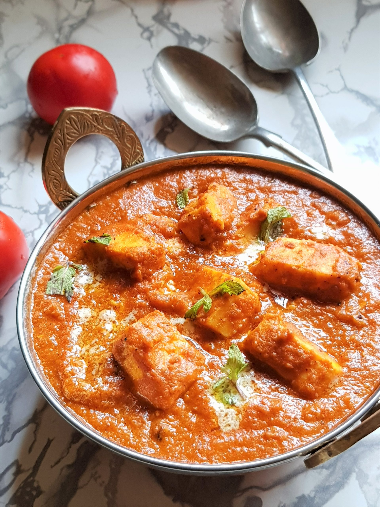
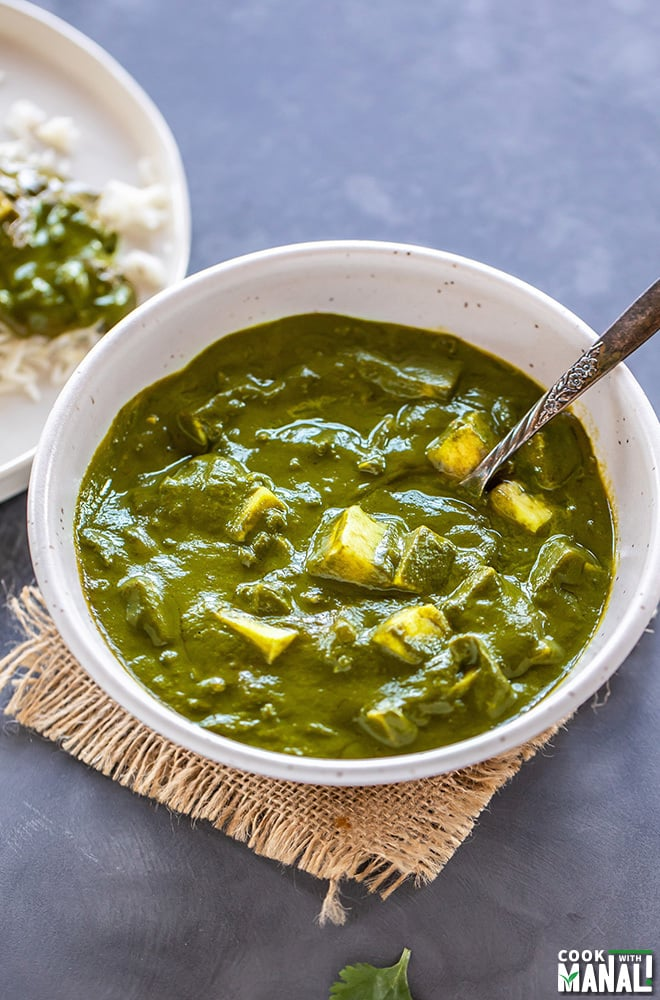

Punjabi Food
Paneer Butter Masala
Ingredients: Paneer, Butter, Cream, Tomato, Spices.
Recipe: Cook tomatoes, blend with spices, add paneer and cream.
Dal Makhani

Ingredients: Black lentils, Butter, Cream, Spices.
Recipe: Soak lentils, cook with spices, finish with butter and cream.
Chole Bhature

Ingredients: Chickpeas, Flour, Spices.
Recipe: Cook chickpeas with spices, serve with fried bread.
Aloo Paratha

Ingredients: Potatoes, Flour, Spices.
Recipe: Stuff spiced potatoes in dough, roll and cook on a griddle.
Palak Paneer
Ingredients: Spinach, Paneer, Spices.
Recipe: Cook spinach, blend, add paneer and spices.